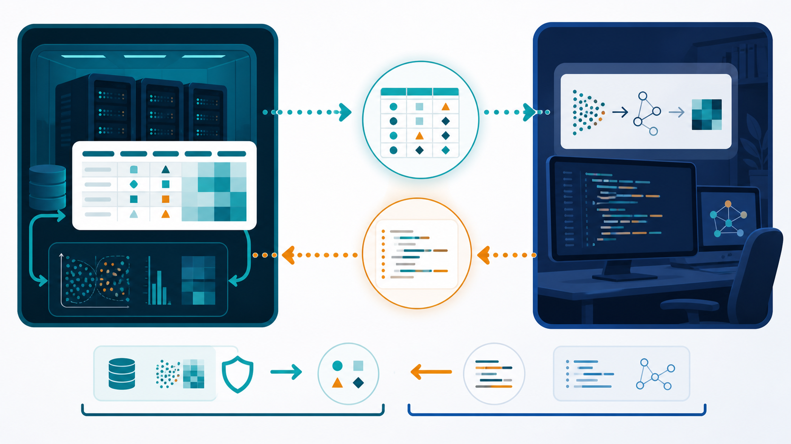

Course · RCC ClusterDocs
Class 18: use a coding agent without sharing your real data
You have data in RCC and want a coding agent—an AI tool that writes, tests, and revises code—to build the analysis. This class shows the simplest safe pattern for an off-site coding agent.
RCC rule: never make real or pseudonymised RCC research data available to an off-site coding agent. Health and genetic data are specially protected under German and EU law. A service subscription, institutional licence, or generic claim that a tool is “approved” is not authorization to disclose RCC data. This class uses fully invented data only.
Five-minute video proposed: the matching narration and six-scene plan are prepared for review. The written walkthrough below is complete and usable now; no video is being presented as released yet.

The proposed fast path
This should take three choices, not a privacy project:
- choose a file in your RCC project;
- describe the table, plot, or report you want; and
- click Make coding example.
RCC creates a ready-to-upload ZIP containing invented example data, the question, the expected output, and a bounded prompt. For ordinary tabular data, there is no form and no case-by-case approval.
If the format contains free text, images, genomic records, exact dates, or another pattern the generator cannot handle safely, it offers Use inside RCC. The user can continue with an approved RCC/local coding agent without exporting the data. Only unusual cases should need support.
The whole idea in one picture
choose file + describe result + Make coding example
|
+--> RCC makes a tiny example with invented values
|
+--> off-site coding agent writes general code
|
+--> code returns to RCC
|
+--> real analysis runs in RCC
The coding agent needs to see the shape of the problem, not the real people or measurements.
1. What the button creates
The user should not have to assemble the bundle manually. Make coding example creates:
CODING_AGENT_REQUEST/
├── QUESTION.md
├── example.csv
└── EXPECTED_OUTPUT.md
The downloadable example bundle shows what the proposed service produces. Until the service exists, the same small bundle can be created manually without copying any real row.
QUESTION.md
Describe the result in ordinary language:
Compare measurement_a between group_a and group_b.
Make one summary table and one clear plot.
The real input is a CSV file with the same columns as example.csv.
Do not include project names, patient details, filenames copied from the real dataset, or a real error message that contains values.
example.csv
Use the same column names and broad data types only when those names are safe to share. Invent every value from scratch:
sample_id,group,age_band,measurement_a,passed_qc
SYN-001,group_a,40-49,12.4,true
SYN-002,group_a,50-59,11.8,true
SYN-003,group_b,40-49,18.1,false
SYN-004,group_b,50-59,17.6,true
SYN-001 is not a replacement for a real patient ID. The entire row is made
up. The numbers are illustrative, not noisy versions of real measurements.
2. Do not “scramble” real rows
These shortcuts are not a safe export:
- shuffling the rows;
- hashing or numbering patient IDs;
- swapping values between patients;
- changing names but retaining dates, locations, diagnoses, or free text;
- copying rare categories or unusual combinations; or
- pasting the first ten real rows and asking the coding agent to ignore them.
Such data may still describe identifiable people. Pseudonymised data that can be linked back to a person remains personal data. Make coding example avoids these shortcuts. If it cannot safely create a fixture, choose Use inside RCC and continue without exporting the data.
3. Give the off-site coding agent a bounded request
Copy this prompt and attach only the invented files:
The attached CSV is entirely synthetic. Write a small, reproducible analysis
for a real CSV with the same columns.
Requirements:
- accept --input and --output command-line arguments;
- never contact a network service;
- never modify the input file;
- validate required columns and explain errors without printing row data;
- save the analysis code, a summary CSV, one plot, and a short run log;
- list required Python packages with versions;
- do not hard-code values from the synthetic rows;
- include a command that tests the code on example.csv.
Explain the plan first. Then provide the files and exact test command.
If the coding agent asks for real values, provide another invented edge case instead. For example, add a synthetic missing value or a deliberately empty group.
4. Bring the code back to RCC
Create a new folder in the project for the proposed code. Keep the downloaded files separate from the real data while you inspect them.
Check that the code:
- reads the input path you provide;
- writes only to the output path you provide;
- does not contain network calls, credentials, or hidden upload code;
- does not delete or overwrite input data;
- has bounded CPU, memory, and time requirements; and
- records package versions and the command used.
Run it on example.csv first. Compare the output with EXPECTED_OUTPUT.md.
5. Run the real analysis inside RCC
After review, point the same code at the real project input inside RCC. Use an RCC worker for substantial computation. Store code, logs, plots, tables, and the final report in the project.
Do not send real outputs back to the off-site coding agent unless those outputs have separately been approved for external use. An error message can also leak filenames, values, or sample identifiers; make a short synthetic reproduction instead.
Three-point completion check
You have completed the course when:
- you shared only the bundle created by Make coding example;
- the returned code passed on that example inside RCC; and
- the real data and real analysis outputs stayed inside RCC.
RCC performs the detailed fixture checks automatically. The user sees a clear green result or the Use inside RCC alternative, not a long approval form.
This workflow helps with writing code. It is not a claim that a dataset has been legally anonymised, and it does not replace project-specific approval.
For the legal and operational boundary, read off-site coding agents must not receive RCC research data.